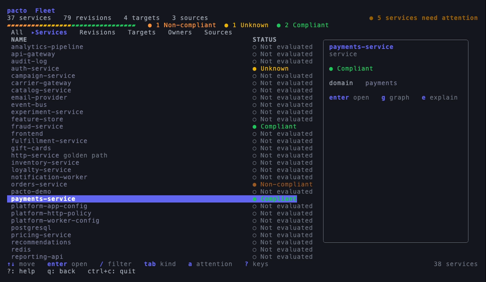

Fleet views¶
Three ways to see all your services at once: the dashboard in a browser,
pacto fleet in a terminal or CI job and pacto tui in an interactive
terminal. All three read the same operational graph,
the joined view of your contracts, their versions and where they run. An AI
agent asks the same questions through the pacto_fleet_* tools of
pacto mcp --fleet.
The contract-to-infrastructure side is in For platform
engineers.
Dashboard¶
pacto dashboard opens a web dashboard over the same contracts the CLI manages
and the operator checks. It has four views: what needs attention now, the
service list, the Operational Graph and change
analysis. It finds its sources at startup and merges them per service. Next to
the Kubernetes operator it needs no OCI arguments: it reads the registry
addresses from the resolvedRef field in each Pacto resource's status, then
shows version history, interfaces, configuration schemas and diffs. See the pacto dashboard
reference for its flags and environment
variables. The service page describes what a
service's page shows and how it says what Pacto does not know.
The Overview counts inferred services apart and the Services list filters them.


Its HTTP API is described at /openapi.json; see Dashboard container.
Fleet queries without a browser¶
pacto fleet answers the same questions from a terminal or a CI job: it builds
one snapshot from the sources you name, then queries it with search, get,
graph, status and explain. entities, entity and attention list
owners, business domains and offerings, inspect one of them and list what
needs attention, most severe first. Ask questions about your
organization maps common questions to these
commands. pacto fleet neighborhood <service> lists who a service depends on
and who depends on it, with their owners, and --mira-source <url> adds the
calls a Mira node saw as observed edges. pacto fleet versions <offering>
lists each provider's versions of a platform offering and, with --range,
which satisfy it, and pacto fleet entities --consumes <offering> lists the
services that consume it. pacto fleet entity offering <slug> shows each
consumer's provisioning status.
pacto fleet entities --kind external lists the
external systems contracts name, and get,
graph and explain take external:<identity>, such as external:stripe.
For inferred services:
pacto fleet entities --declaration inferred --k8slists them, as below, each with the group the cluster puts it in, and--grouptakes a group key (workload.group.key) to list one group;pacto fleet graphlists the calls with no contract on one end asinferrededges, with the sources that saw them;getorgraphon the key of an inferred service a contract took over first says which service replaced it.
2 of 2 entit(ies):
inferred k8s:shop/Deployment/billing k8s:shop%2FDeployment%2Fbilling -
namespace shop kind Deployment image registry.example/billing:1.4.2 group Argo CD Application shop
inferred k8s:shop/Deployment/cart k8s:shop%2FDeployment%2Fcart -
namespace shop kind Deployment image registry.example/cart:2.0.1 group Helm release shop/cart
Golden paths have their own filters:
pacto fleet entities --templatelists golden paths, and--template=excludeleaves them out;pacto fleet entities --created-from <key>lists the services created from one golden path,(none)those that declare no origin and(unresolved)those whose origin resolves to no golden path;--sort createdranks golden paths by the services created from them;pacto fleet search --templatefilters a search the same way;- the MCP tools take
templateandcreated_from, and the dashboard lists golden paths on its Golden paths page.
Platform offerings answer the same questions on every surface:
pacto fleet entities --kind offering --lifecycle deprecated(orsunset) lists offerings by the worst provider version in use, so the demo lists postgresql, and services by their newest revision;--failedkeeps offerings with a failed provisioning request. Thepacto_fleet_entitiestool takeslifecycleandfailed, and the dashboard API takes the same query parameters;pacto fleet entity offering <slug>andpacto_fleet_entityadd each provider's availability,successorandlatestSupported, the offering's availability roll-up and itsobservedConsumers;pacto fleet versions <offering>andpacto_fleet_versionsadd each provider'ssuccessorand, with a range, whether the range accepts it insuccessorRange;pacto fleet status --lifecycleand thelifecycleargument ofpacto_fleet_statusreport services that use a deprecated or past-sunset provider.
$ pacto fleet search --local ./contracts --oci ghcr.io/acme/unreachable-pacto:1.0.0
1 of 1 service(s):
payments-api NotEvaluated owner=acme/payments domain=- offering=- revs=1 targets=0
warning: answer is partial (as of 2026-08-23T01:30:40+02:00)
- [SOURCE_PARTIAL] source oci returned a partial result
- [SOURCE_RECORD_INVALID] ref ghcr.io/acme/unreachable-pacto:1.0.0 could not be resolved: artifact not found: ghcr.io/acme/unreachable-pacto:1.0.0
Read the completeness before you read the rows. Pacto reports an unreachable
registry, so a service missing from a partial answer may be one the missing
source knew about. Likewise 1 of 1 is this page of total matches. --output-format json carries the
same facts in a meta envelope for a CI job to branch on, and
query semantics has the five operations
and the knowledge vocabulary behind
completeness.
Detected providers¶
pacto fleet providers --k8s lists the
providers Pacto detected in each cluster.
--detected k8s:<namespace>/<release>-detected adds the
rows the operator detected,
marked (inferred), here and in pacto fleet status.
Namespace scope¶
A Kubernetes source that reads a list of namespaces (--namespace
payments,ledger, or an operator with controller.watchNamespaces) is always
partial. It names its scope in a K8S_NAMESPACE_SCOPED limitation, such as
source kind-demo watches 2 namespaces (ledger and payments); services in any other
namespace are unknown, and in its namespaces list. A listed namespace it
could not read is left out of namespaces and named in a
K8S_NAMESPACE_UNREADABLE limitation.
A service's changes¶
A service's detail carries its changes: each declared change between the
revisions Pacto holds, in version order, with provenance and source.
pacto fleet entity service <key> --reached and reached on a stdio
pacto_fleet_entity add when each change's revision reached a Stage, from
delivery records read with your credentials; see
a service's changes.
The organization in one answer¶
pacto fleet overview prints the answer the dashboard overview draws: target
compliance with its stale Compliant subset, operational health, knowledge
gaps, ownership, evaluation coverage, the business domains and where to look
next. The MCP tool pacto_fleet_overview returns the same answer. Run on the
demo fixture, abridged:
$ pacto fleet overview --local examples/demo/bundles --target-state examples/demo/fleet-targets.yaml
asOf 2026-11-15T04:41:58+01:00 completeness complete
Targets 9: compliant 5 (5 stale) · not compliant 1 · unknown 3
Health: healthy 0 · failing 1 · unknown 2 · not observed 6
Owners: 34 declared · 3 disputed · 0 none declared · 0 unknown
Next: pacto fleet attention --category health (Operational targets failing their health check: 1)
Failing means a target's own health check reports it is not healthy, and unknown means Pacto cannot tell. Organizational health and knowledge explains each count, and the tallies reference lists every field. The CLI lists each incomplete source by name in the answer, and the dashboard's Incomplete sources entry point opens the same sources.
pacto fleet, pacto mcp --fleet and pacto tui mark target evidence older
than 24 hours as stale by default, the window the dashboard uses.
--freshness 0 skips the check; the answer then carries the
FRESHNESS_NOT_EVALUATED limitation and the CLI prints it as a note.
One question, three surfaces¶
A person and an agent ask the same question in the same words. Each row names the command, the MCP tool and the dashboard API route that answer it; a flag, a tool argument and a route parameter with one meaning carry one name. A dash marks a surface that does not answer the question, and the note says where that answer lives instead.
| Question | CLI | MCP tool | Dashboard route | Note |
|---|---|---|---|---|
| Which owners, domains, offerings or services match? | pacto fleet entities |
pacto_fleet_entities |
GET /api/fleet/entities |
|
| What is this service, revision, owner, domain, offering or external system? | pacto fleet entity |
pacto_fleet_entity |
GET /api/fleet/entities/{kind} |
|
| What changed in this service, and when did it reach each Stage? | pacto fleet entity service <key> --reached |
pacto_fleet_entity with reached |
GET /api/fleet/entities/{kind}?reached=true |
Times only from delivery records read as you; an HTTP MCP server answers times: not-read |
| What needs attention? | pacto fleet attention |
pacto_fleet_attention |
GET /api/fleet/attention |
|
| Who depends on this service, and on whom does it depend? | pacto fleet neighborhood |
pacto_fleet_neighborhood |
GET /api/fleet/neighborhood |
|
| Which services match this text or filter? | pacto fleet search |
pacto_fleet_search |
GET /api/fleet/services |
|
| How is the fleet doing? | pacto fleet status |
pacto_fleet_status |
GET /api/fleet/status |
|
| How healthy is the organization and how much do we know? | pacto fleet overview |
pacto_fleet_overview |
GET /api/fleet/overview |
|
| What did Pacto detect in my cluster, and what does it use each for? | pacto fleet providers |
pacto_fleet_status (providers) |
GET /api/fleet/providers |
No separate tool; the status answer carries the rows |
| What is this service or target? | pacto fleet get |
pacto_fleet_get |
GET /api/fleet/service, GET /api/fleet/target |
|
| What is this service's dependency tree? | pacto fleet graph |
pacto_fleet_graph |
GET /api/fleet/services/{name}/graph |
|
| Why does Pacto say this? | pacto fleet explain |
pacto_fleet_explain |
- | The dashboard explains on its entity pages |
| Which versions of this offering exist? | pacto fleet versions |
pacto_fleet_versions |
GET /api/fleet/versions |
|
| What does a document in this revision say? | pacto doc |
pacto_fleet_revision_document |
GET /api/fleet/revisions/document |
The CLI reads the bundle itself |
| What is the whole read model? | pacto fleet snapshot |
- | GET /api/fleet/snapshot |
MCP answers through the fleet tools |
| Which services should Backstage show? | pacto export backstage |
- | GET /api/backstage/entities |
YAML for a Backstage catalog location, outside the OpenAPI document; agents read the same services through the fleet tools |
| Which consumers does this change affect? | pacto impact |
pacto_impact |
GET /api/fleet/impact, POST /api/fleet/impact |
Over HTTP and on a shared dashboard, only revisions in your view |
| What did Pacto catch and deliver? | pacto stats |
pacto_stats |
GET /api/stats |
Unsigned statistics; the dashboard reads the repository pacto dashboard --stats-registry names |
| Which run records are behind this number? | - | - | GET /api/stats/records |
The Metrics page lists them; the CLI and MCP answer totals |
| What does this server serve? | - | pacto_capabilities |
GET /api/capabilities |
The CLI runs every command as the local user |
| Who am I to delivery? | pacto delivery caller |
pacto_delivery_caller |
GET /api/delivery/caller |
|
| What waits on me? | pacto delivery inbox |
pacto_delivery_inbox |
GET /api/delivery/inbox |
|
| Which environments run which version? | pacto delivery environments |
pacto_delivery_environments |
GET /api/delivery/environments |
|
| How far is each Stage from autonomy? | pacto delivery autonomy |
pacto_delivery_autonomy |
GET /api/delivery/autonomy |
|
| Which versions do the Stages know, and are they signed? | pacto delivery published |
pacto_delivery_published |
GET /api/delivery/published |
|
| Which publishes did Pacto refuse? | pacto delivery refusals |
pacto_delivery_refusals |
GET /api/delivery/refusals |
|
| Which publishers does each service accept? | pacto delivery trust |
pacto_delivery_trust |
GET /api/delivery/trust |
|
| Where is this service in delivery? | pacto delivery status |
pacto_delivery_status |
GET /api/delivery/progress |
Progress is status with --why (why in MCP) |
| What happened on this Stage? | pacto delivery history |
pacto_delivery_history |
GET /api/delivery/history |
|
| What did each Stage run at a past time? | pacto delivery history --at |
pacto_delivery_history with at |
GET /api/delivery/history?at= |
From signed records; the CLI and MCP revision is derived, the dashboard's is the fleet's |
| Who put this digest there? | pacto delivery blame |
pacto_delivery_blame |
GET /api/delivery/blame |
|
| Which versions may this Stage take? | pacto delivery candidates |
pacto_delivery_candidates |
- | The dashboard lists them in its propose panel |
| What does this delivery record say? | pacto delivery record get |
pacto_delivery_record_get |
GET /api/delivery/record |
|
| Does this delivery record verify? | pacto delivery record verify |
pacto_delivery_record_verify |
- | The dashboard verifies on its record page |
| Where is this operation? | pacto delivery get |
pacto_delivery_get |
GET /api/delivery/operations/{namespace}/{name} |
|
| Why is this operation where it is? | pacto delivery explain |
pacto_delivery_explain |
- | The dashboard explains on its operation page |
| How would I undo this operation? | pacto delivery undo |
pacto_delivery_undo_plan |
GET /api/delivery/undo |
|
| Where is this service in its lifecycle? | pacto delivery lifecycle |
pacto_delivery_lifecycle |
GET /api/delivery/lifecycle |
|
| Which operation types exist? | pacto delivery describe |
pacto_delivery_operation_types |
- | The dashboard's propose panel lists them |
| What would this operation do? | pacto delivery plan |
pacto_delivery_operation_plan |
POST /api/delivery/plan |
|
| Propose this operation | pacto delivery propose |
pacto_delivery_operation_propose |
POST /api/delivery/operations |
|
| Cancel this operation | pacto delivery cancel |
pacto_delivery_cancel |
DELETE /api/delivery/operations/{namespace}/{name} |
|
| Answer this operation | pacto delivery approve |
- | POST /api/delivery/operations/{namespace}/{name}/decision |
People answer; MCP has no approve tool |
| Create a contract | pacto init |
pacto_create |
- | The dashboard writes no contract files |
| Edit a contract | - | pacto_edit |
- | People edit pacto.yaml and run pacto validate |
| Is this contract valid? | pacto validate |
pacto_check |
- | The dashboard validates nothing |
| What may a contract say? | - | pacto_schema |
- | The JSON Schema is published with the docs |
| Declare a running service | pacto declare |
pacto_declare |
- | An agent writes a draft a person accepts with pacto declare --from-draft; over HTTP the tool only plans |
| Accept proposed ranges or a break | pacto accept |
pacto_accept |
POST /api/fleet/accept |
An agent writes an acceptance draft a person signs with pacto accept --draft; the tool is served over stdio only; the dashboard shows the plan and the pacto accept command and never signs or writes |
For one fleet, the three surfaces return the same asOf, completeness,
limitations and unknown counts. The dashboard, and MCP with --dashboard-url,
also add href links to dashboard pages.
The terminal UI¶
pacto tui is the dashboard's terminal equivalent, built over the snapshot
pacto fleet builds and taking the same source flags. It loads that snapshot
once and opens on the Services tab. From there you move through services,
revisions, targets, owners and sources, with whatever row is highlighted standing
in as the argument, so you never type a path. It needs an interactive terminal;
in a pipeline, use the plain commands.
One difference from the dashboard matters more than the rest: the dashboard
only reads and the TUI also writes. Read verbs run in-process against the loaded
snapshot. Write verbs shell out to this same binary so they own the terminal.
Each one names what it is about to change before it waits for a y: the
directory a pull will overwrite, the resolved plugin binary, the output directory
a generate will write. Pass --read-only to remove the four write verbs from
the in-TUI help screen.
# whatever bundles are under the current directory
pacto tui
# a populated screen from the committed demo fixture
pacto tui --local examples/demo/bundles \
--target-state examples/demo/fleet-targets.yaml \
--traces examples/demo/traces.json
# the same demo with no clone at all, straight out of the registry
pacto tui --root oci://ghcr.io/trianalab/pacto/pacto-demo:1.0.0 --local ""
The second command needs a clone and a paste from the repository root; it opens
on 38 services, a golden path and 4 operational targets. The third needs nothing on disk:
--root follows the published contract's dependency declarations and pulls 12 of
the demo's 39 services out of ghcr.io, and --local "" switches off the default
directory scan. A registry has no record of where anything runs, so every
service reads NotEvaluated until you add the --target-state fixture.

Keys¶
| Key | Action |
|---|---|
tab / shift+tab |
cycle the tabs: kinds on the list, categories under a, direction on a graph |
/ |
filter; enter applies it, esc discards what you typed |
enter |
open the highlighted row |
a |
what needs attention |
+ / - |
graph depth |
? |
toggle the key table for the current screen |
r |
reload the snapshot |
q |
back, or quit from the root screen |
esc |
clear an applied filter, otherwise the same as q |
y |
copy the equivalent pacto command |
v |
validate the selected bundle |
E / e |
explain the bundle, or explain it from the fleet's point of view |
l |
check the lock file |
d / i |
diff or impact between two selections, pressed twice |
g |
the selection's neighborhood graph |
p / P |
push, or pull (writes; asks first) |
L |
rewrite the lock file (writes; asks first) |
G |
run a generate plugin (writes; asks first) |
y copies the command you would have typed to the clipboard, so you can run
anything the TUI has no key for. The line is shell-quoted, so a value
carrying a space or a semicolon still pastes as one argument. With no clipboard, for example over
ssh or on a headless box, the TUI prints the line and the reason it could not
copy it. See the pacto tui
reference for every flag.